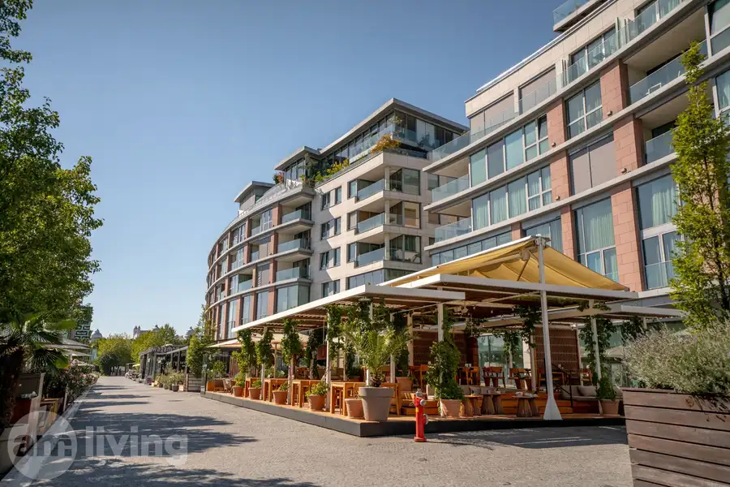
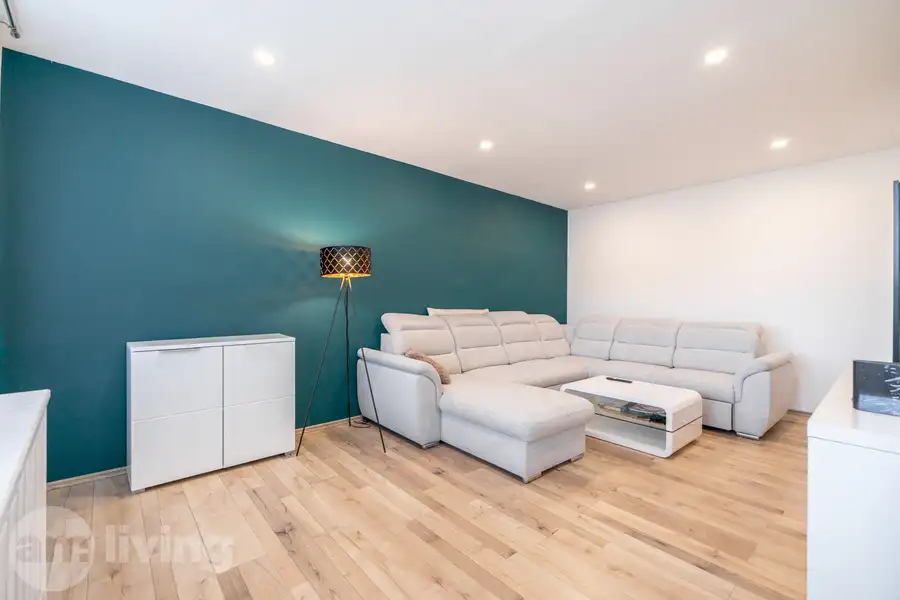
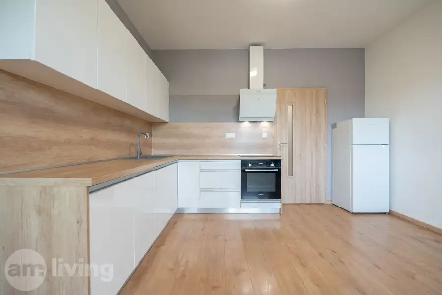

NOVOSTAVBA - zariadený rodinný dom - Trenčianske Jastrabie
Trenčianske Jastrabie
- Dispozícia4-izbový
- Plocha101.5 m²
- Poschodie0. z 1
- Stavúplne prerobený
O nehnuteľnosti
AM LIVING realitná kancelária
Vám ponúka na predaj komplet zariadený a skolaudovaný 4 izbový rodinný dom - novostavbu kolaudovanú v roku 2025. Rodinný dom disponuje úžitkovou plochou 101,5 m² a je postavený na slnečnom pozemku o výmere 414 m² v novovybudovanej štvrti obce Trenčianske Jastrabie v časti Hôrky.
Technický stav:
Jedná sa o dvojdom, ktorý je prepojený zastrešením nad vstupom – nemá žiadnu spoločnú stenu so susedom a každý je zvlášť napojený na siete. Dom je skolaudovaný a kompletne zariadený, pripravený na okamžité bývanie. Disponuje 4 izbami, dvoma kúpeľňami a technickou miestnosťou. Na výstavbu a dokončenie interiéru boli použité kvalitné materiály, čo zaručuje dlhú životnosť stavby a bezstarostné a komfortné bývanie - tvárnice HELUZ hrúbky 300 mm s kompaktným zateplením z polystyrénu o hrúbke 150 mm, okná izolačné trojsklo v hnedom dekore s exteriérovými elektrickými žalúziami v krémovom prevedení, kuchyňa na mieru z DanKüchen spolu so vstavanými spotrebičmi Elektrolux. Celý dom je vykurovaný pomocou podlahového kúrenia ktoré je napojené na tepelné čerpadlo. Napojený je na elektrinu, studňu (zmäkčovač vody v technickej miestnosti) a odpad je riešený formou žumpy.
Lokalita:
Rodinný dom sa nachádza v novovybudovanej časti v obci Trenčianske Jastrabie, vziadelené len pár minút od krajského mesta Trenčín alebo od mesta Bánovce nad Bebravou. V okolí je množstvo zelene a prírody, nakoľko sa jedná a posledný rad domov v tejto časti, v zadnej časti domu nemáte žiadnych susedov, len lúky a polia. Lokalita ponúka rýchlu dostupnosť na hlavný ťah medzi Trenčínom a Bánovcami nad Bebravou, vďaka čomu je to len kúsok do oboch miest. V tesnej blízkosti sa nachádza kompletná občianska vybavenosť, obchody, materská a základná škola a zastávka. Priamo v obci sa nachádza množstvo turistických chodníkov ako aj priamy prístup na Inovec.
Prečo práve táto nehnuteľnosť?:
-nízke prevádzkové náklady
-kompletné zariadenie
-skolaudovaná novostavba
-množstvo zelene
-rýchla dostupnosť do Trenčína
Cena:€ 299.900,-
V prípade záujmu o viac informácií alebo obhliadku ma neváhajte kontaktovať.
Parametre
| Rozloha pozemku | 414 m² |
|---|---|
| Zastavaná plocha | 144 m² |
| Úžitková plocha | 101.5 m² |
| Poschodie | prízemie |
| Počet poschodí | 1 |
| Počet izieb | 4 |
| Stav | úplne prerobený |
| Voda | studňa |
| El. napätie | 230/400V |
| Plyn | nie |
| Kanalizácia | žumpa |
| Postavené z | tehla |
| Zariadenie | zariadený |
| Zateplený objekt | áno |
| Energetický certifikát | nie |
| Terén | rovina |
| Novostavba | áno |
| Dátum zverejnenia | 17. 8. 2026 |
Kde to je
Mohlo by Vás zaujímať

Byt10 599 900 €EUROVEA - 3i byt 94m2 - Bratislava - Nivy (Downtown) Nivy, Bratislava 3-izbový94 m²4. podlažie AM LIVING realitná kancelária Vám predstavuje ponuku prémiového bývania na jednej z najvyhľadávanejších adries v Bratislave. Na predaj ponúkame…
Byt10 144 900 €TOP LOKALITA - 2i byt 61m2 s loggiou - Nová Dubnica Nová Dubnica 2-izbový61 m²13. podlažie AM LIVING realitná kancelária Vám ponúka na predaj 2 izbový byt o výmere 61m2 nachádzajúci sa na 4.poschodí v zrevitalizovaneom bytovom dome vy…
Byt10 173 000 €NOVOSTAVBA - 2i byt + parking + balkón - Geminim Trenčín Trenčín 2-izbový43.52 m²6. podlažie AM LIVING realitná kancelária Vám ponúka na predaj moderný 2-izbový byt v novostavbe s balkónom, vlastným parkovaním za rampou a krásnym výhľadom na…